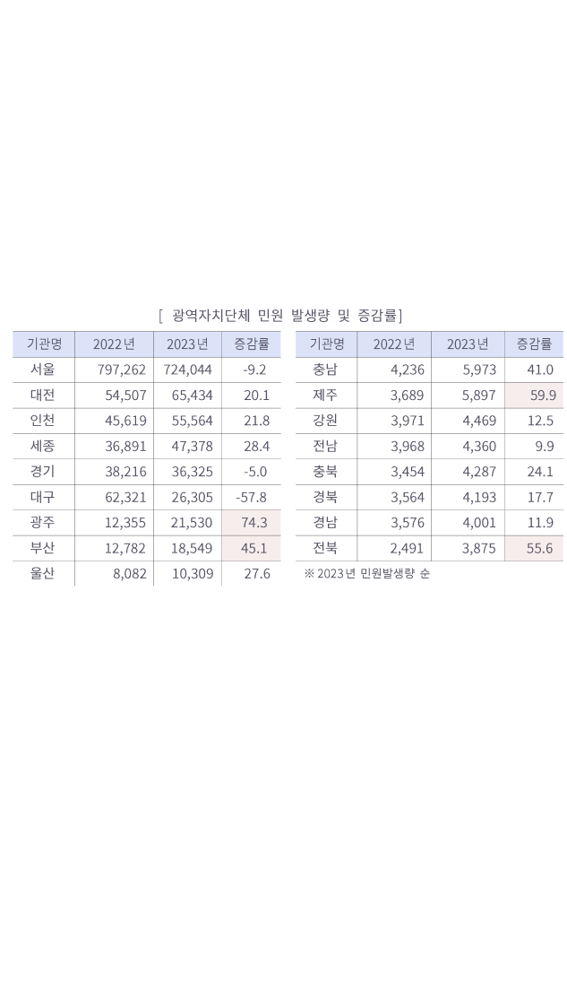

<div class="wireframe-4">
  <div class="rectangle-22"></div>
  <div class="rectangle-4"></div>
  <div
    class="frame-7"
    style="
      background: url(frame-70.png) center;
      background-size: cover;
      background-repeat: no-repeat;
    "
  >
    <div class="div">● 기관별 동향</div>
    <div class="_2023-15-3-099-435-5-5">
      2023 년 중앙행정기관 민원은 15 총 건 3,099,435 으로 전년 대비 5.5% 증가
      발생량 상위 개 기관 중 전년 대비 민원이 가장 많이 증가한 기관은 기재부 등,
      감소한 기관은 교육부 환경부 등
    </div>
  </div>
  <div class="rectangle-3"></div>
  
  <div class="_2023-1-042-493-5-0-14-3">
    2023 년 광역자치단체 민원은 총 1,042,493건으로 전년 대비 5.0% 감소, 전년
    대비 민원이 증가한 시 도는 광주 제주 전북 부산 등 14개, 감소한 시 도는 경기
    서울 등 3개
  </div>
</div>
